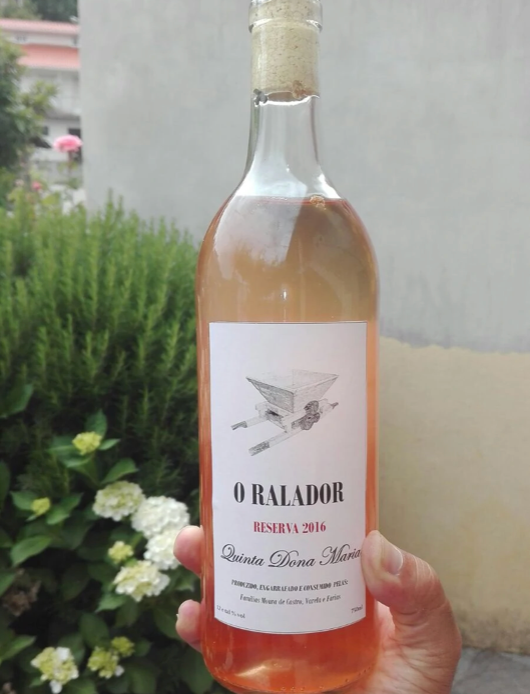

Vinho Especial

Para nós, é acima de tudo um Vinho Especial. A sua alma nasce do sentimento com que é feito. É o fruto do trabalho de décadas, do respeito pelas tradições, de um solo enriquecido, do bom casamento das castas utilizadas e sem esquecer do inevitável "ralador".
Venha às nossas degustações
Este vinho produzido, engarrafado e consumido na Região Demarcada de Lazarim, aqui faz um estágio em barrica, que lhe transmitiu um sabor inconfundível. Em boca é seco e frutado, onde os sabores do olfato se repetem. Possui o corpo médio, acidez média-alta, taninos médios e macios, e álcool em equilíbrio.
Seu final de boca é agradável e longo. Um ótimo vinho!
